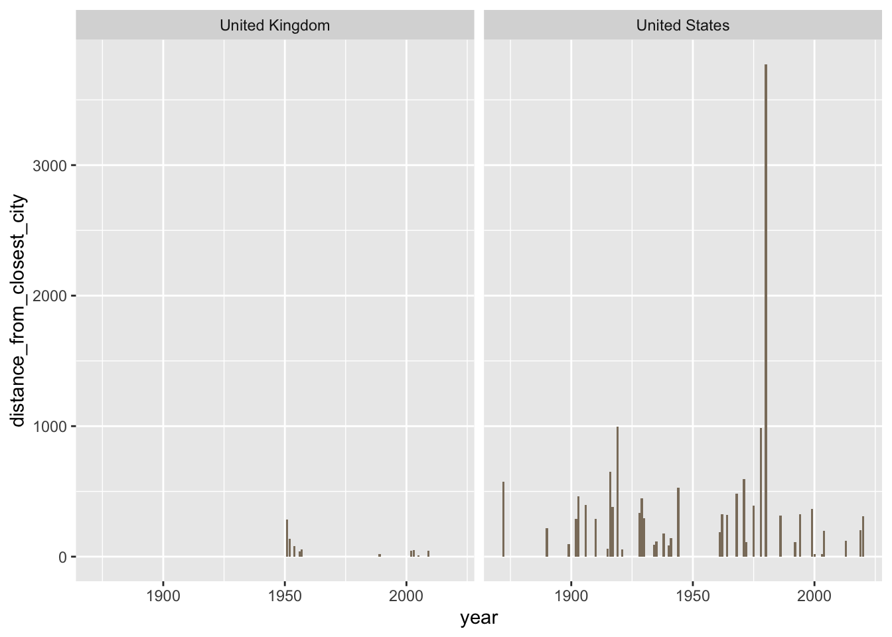

library(ggplot2)
library(tidyverse)
library(DigitalMethodsData)
library(ggmap)
library(tidygeocoder)Worksheet 5: Mapping
This is the fifth in a series of worksheets for History 8510 at Clemson University. The goal of these worksheets is simple: practice, practice, practice. The worksheet introduces concepts and techniques and includes prompts for you to practice in this interactive document. When you are finished, you should change the author name (above), knit your document, and upload it to canvas. Don’t forget to commit your changes as you go and push to github when you finish the worksheet. li ## Mapping with ggmap() and ggplot2()
There are many different mapping packages for R. That means there is no single way to create a map in R. Different packages have different strengths and weaknesses and your use of them will depend on your goals and the historical questions you would like to ask. If your project is highly map centric - it may be better suited to ArcGIS which we will not cover in this class.
Geocoding
The first step in any project is to create geographical data. Depending on the time period you study and the nature of the data, this may or may not be able to be automated. The process of associating geographical coordinates (latitude/longitude) with data is called geocoding. There are numerous avenues and services for performing this service. Google Maps and Open Street Maps are the two most common. These services accept an address and return latitude and longitude coordinates. Google Maps does require an API Key which you can sign up for. Typically geocoding with Google costs .5 cents per entry but when you sign up with them, you get $300 in credit per year (at least at the time of writing this - that may change). Although we geocode a very large amount of data with Google on Mapping the Gay Guides, I’ve never been charged for geocoding.
However, for the purposes of this class we’re going to use Open Street Map’s geocoding API because it is open source and therefore free.
To use the geocoding service, lets first load some data. We’ll use the recreation data that we used last week.
rec.data <- read.csv("https://raw.githubusercontent.com/regan008/DigitalMethodsData/main/raw/Recreation-Expenditures.csv")
head(rec.data) city state year population total_expenditures X
1 Charleston SC 1930 84000 19593.65 NA
2 Columbia SC 1930 65000 18000.00 NA
3 Florence SC 1930 17000 6100.00 NA
4 Greenville SC 1930 35000 5315.00 NA
5 Orangeburg SC 1930 10000 3206.57 NA
6 Spartanburg SC 1930 35000 10313.14 NANotice in this dataset we have the city state and year but no geographical coordinates if we wanted to map this data. Even if we don’t have an exact street address, we can still geocode this data to get coordinates. The function to do that is geocode() and we can pass it a city and street. Note the method option, which designates which geocoding service we want to use.
rec.data.coordinates <- rec.data %>% geocode(city = city, state = state, method='osm', lat = latitude, long = longitude)
head(rec.data.coordinates)Now we have latitude and longitude coordinates for our data.
- Use this approach to geocode the
UndergroundRRdata.
library(DigitalMethodsData)
data(UndergroundRR)
UndergroundRR.coordinates <- undergroundRR %>% geocode(city = City, state = State, method='osm', lat = latitude, long = longitude)
head(UndergroundRR.coordinates)- Geocode the Boston Women Voters dataset. Note that the data does include street addresses but because they are broken into parts - street address number, street, etc - you’ll need to combine them into a full address to pass to the geocoding function.
data("BostonWomenVoters")
BostonWomenLocation <- BostonWomenVoters %>% filter(Husband.State.or.Province.of.Birth == "Maryland") %>% select(Street.of.Residence.on.April.1, Street.Number.on.April.1) %>% mutate(location = paste0(Street.Number.on.April.1, " ", Street.of.Residence.on.April.1, ", ", "Boston,", " MA"))
BostonWomenVoters.coordinates <- BostonWomenLocation %>% geocode(location, method='osm', lat = latitude, long = longitude)
head(BostonWomenVoters.coordinates)- As mentioned above - there are many ways to make a map in R. The
ggmap()package has a function calledqmplot()which allows for the quick plotting of maps with data. Look up the documentation for this package and use it to create a plot of the recreational data that we gecode above.
Maps with ggplot()
Just like charts in ggplot, maps in ggplot are plotted using a variety of layers. To build a map we need to supply it with geographic data that can use to plot a base map. Your base map will differ depending on the scale of your data, the questions you are asking, and your area of study. For the purposes of this worksheet lets map the gay guides data. Typically you’d need to geocode this data first, but this data has already been geolocated for you.
First we need to get a basemap. For this example we’ll use the map_data() function which turns data from the maps package into a data frame that is suitable for plotting with ggplot.
- Look at the documentation for
map_data(). Which geographies does this package provide access to?
map_data() provides access to maps:: country, maps::france, maps::italy, maps::nz, maps::state, maps::world, maps::world2. You can then narrow these further to subregion if you wish.
Lets load the base map data for the US.
usa <- map_data("state")map_data()generates a data frame. Take a look at this data frame, what types of data are included?
Longitude, latitude, group, order, region, and subregion.
We can now pass this data to ggplot to create a simple basemap. When we wanted to create a bar plot using ggplot() we called geom_bar. When we wanted to create a line chart we used geom_point() and geom_line(). The sample principle applies here and ggplot() provides a geom for maps.
ggplot() +
geom_map( data = usa, map = usa, aes(long, lat, map_id=region))Warning in geom_map(data = usa, map = usa, aes(long, lat, map_id = region)):
Ignoring unknown aesthetics: x and y
Now we have a basemap! But what if we want to layer data onto it. Lets add all of the locations in gayguides from 1965. First we need to set up our data:
data(gayguides)
gayguides <- gayguides %>% filter(Year == 1965)And then we can use the same mapping code from above but this time we’re going to add an additional geom – geom_point() which will point to each of our locations from 1965.
ggplot() +
geom_map( data = usa, map = usa, aes(long, lat, map_id=region)) +
geom_point(data = gayguides, mapping = aes(x=lon, y=lat))Warning in geom_map(data = usa, map = usa, aes(long, lat, map_id = region)):
Ignoring unknown aesthetics: x and y- This map looks slightly funny, but that is because the data includes entries outside of the contiguous United States. Try filtering out those entries and mapping this again. Can you change the color or size of the points? Can you add a title?
data(gayguides)
gayguides <- gayguides %>% filter(Year == 1965) %>% filter(lon >= -140)
ggplot() +
geom_map( data = usa, map = usa, aes(long, lat, map_id=region), fill = "slategrey", color = "cornflowerblue") +
geom_point(data = gayguides, mapping = aes(x=lon, y=lat), color= "black") + labs(title = "Gayguides Locations in 1965")Warning in geom_map(data = usa, map = usa, aes(long, lat, map_id = region), :
Ignoring unknown aesthetics: x and y- Can you map just locations in South Carolina (on a basemap of SC)?
data(gayguides)
gayguides.SC <- gayguides %>% filter(state == "SC")
usa.SC <- usa %>% filter(region == "south carolina")
ggplot() +
geom_map( data = usa.SC, map = usa.SC, aes(long, lat, map_id=region), fill = "slategrey", color = "cornflowerblue") +
geom_point(data = gayguides.SC, mapping = aes(x=lon, y=lat), color= "black") + labs(title = "Gayguides Locations in SC")Warning in geom_map(data = usa.SC, map = usa.SC, aes(long, lat, map_id =
region), : Ignoring unknown aesthetics: x and y- Create a map that uses your geocoded data from the Boston Women Voters dataset.
BostonWomenVoters.coordinates <- read.csv("bwv-coords.csv")
#data(BostonWomenVoters.coordinates)
usa.MA <- usa %>% filter(region == "massachusetts")
ggplot() +
geom_map( data = usa.MA, map = usa.MA, aes(long, lat, map_id=region), fill = "cornsilk4", color = "cadetblue1") +
geom_point(data = BostonWomenVoters.coordinates, mapping = aes(x=longitude, y=latitude), color= "cadetblue1") + labs(title = "BostonWomenVoters from Maryland")Warning in geom_map(data = usa.MA, map = usa.MA, aes(long, lat, map_id =
region), : Ignoring unknown aesthetics: x and yWarning: Removed 6 rows containing missing values or values outside the scale range
(`geom_point()`).Lets return to the recreational data for a minute.
rec.data.coordinates <- read.csv("recdata.csv")
head(rec.data.coordinates) X.1 city state year population total_expenditures X latitude
1 1 Charleston SC 1930 84000 19593.65 NA 32.78844
2 2 Columbia SC 1930 65000 18000.00 NA 34.00031
3 3 Florence SC 1930 17000 6100.00 NA 34.19844
4 4 Greenville SC 1930 35000 5315.00 NA 34.85135
5 5 Orangeburg SC 1930 10000 3206.57 NA 33.49182
6 6 Spartanburg SC 1930 35000 10313.14 NA 34.94980
longitude
1 -79.93993
2 -81.03313
3 -79.76717
4 -82.39849
5 -80.85565
6 -81.93202One interesting way to visualize this map might be to plot each location as a point on the map but to use the total_expenditures values to determine the size of the points.
We can do that by making a small adjustment to the map we made previously. First lets recreate a basic map of all these locations using ggplot()
ggplot() +
geom_map( data = usa, map = usa, aes(long, lat, map_id=region)) +
geom_point(data = rec.data.coordinates, mapping = aes(x=longitude, y=latitude))Warning in geom_map(data = usa, map = usa, aes(long, lat, map_id = region)):
Ignoring unknown aesthetics: x and yWarning: Removed 5 rows containing missing values or values outside the scale range
(`geom_point()`).ggplot() +
geom_map( data = usa, map = usa, aes(long, lat, map_id=region), fill="white", color="gray") +
geom_point(data = rec.data.coordinates, mapping = aes(x=longitude, y=latitude, size=total_expenditures))Warning in geom_map(data = usa, map = usa, aes(long, lat, map_id = region), :
Ignoring unknown aesthetics: x and yWarning: Removed 5 rows containing missing values or values outside the scale range
(`geom_point()`).library(readr) #you may have to install it using `install.packages()`.
library(sf)Linking to GEOS 3.11.0, GDAL 3.5.3, PROJ 9.1.0; sf_use_s2() is TRUElibrary(ipumsr)
library(tidyverse)
#NHGIS data is stored in zip files. R has functions for dealing with these but we still need to download the file to our server. Here we're going to write a function that will create a new directory, download the data, and rename it.
dir.create("data/", showWarnings = FALSE)
get_data <- function(x) {
download.file("https://github.com/regan008/DigitalMethodsData/blob/main/raw/nhgis0005_shape_simplified.zip?raw=true", "data/nhgis_simplified_shape.zip")
download.file("https://github.com/regan008/DigitalMethodsData/blob/main/raw/nhgis0005_csv.zip?raw=true", "data/nhgis_data.zip")
}
get_data()
# Change these filepaths to the filepaths of your downloaded extract
nhgis_csv_file <- "data/nhgis_data.zip"
nhgis_shp_file <- "data/nhgis_simplified_shape.zip"
#load the shape file and then the data file into read_nhgis_sf
nhgis_shp <- read_ipums_sf(
shape_file = nhgis_shp_file
)
nhgis_data <- read_nhgis(nhgis_csv_file)Use of data from NHGIS is subject to conditions including that users should cite the data appropriately. Use command `ipums_conditions()` for more details.Rows: 2916 Columns: 13
── Column specification ────────────────────────────────────────────────────────
Delimiter: ","
chr (6): GISJOIN, STATE, STATEA, COUNTY, COUNTYA, AREANAME
dbl (7): YEAR, STATEICP, COUNTYICP, AZF001, AZF002, AZF003, AZF004
ℹ Use `spec()` to retrieve the full column specification for this data.
ℹ Specify the column types or set `show_col_types = FALSE` to quiet this message.#Use the ipums join file to join both the data and shape file together.
nhgis <- ipums_shape_full_join(nhgis_data, nhgis_shp, by = "GISJOIN")
#filter nhgis so that the map focuses on the 48 contiguous states.
nhgis <- nhgis %>% filter(STATE != "Alaska Territory" & STATENAM != "Hawaii Territory")
#plot
ggplot(data = nhgis, aes(fill = AZF001)) +
geom_sf() - In the code above, why filter out Hawaii and Alaska? Try commenting out that line and rerunning the code. What happens? Why might we want to do this? Why might we not want to do this? How does it shape the interpretation? > The inclusion of Alaska and Hawaii messes with the scale of the map due to their size and location. You might want to filter them out if your focus is the continental US, because this will provide the clearest visualization. However, filtering it out allows the viewer to disregard Alaska and Hawaii as part of the US, if for just the moment, and this is not realistically the case.
This is a great start. But using AZF001 (Native born males) as the fill does not create a useful visualization. It doesn’t give us a sense of the proportion of that data. There are multiple problems with the map as it is, but one is that the color scale makes this incredibly hard to read. We can fix that by using a scale to break the values of AZF001 into bins and assign each a color. R has a function for this. It comes from the scales pacakge which you may need to install.
library(scales)
Attaching package: 'scales'The following object is masked from 'package:purrr':
discardThe following object is masked from 'package:readr':
col_factorggplot(data = nhgis, aes(fill = AZF001)) +
geom_sf() + scale_fill_distiller(name="Native Born Males", palette = "Spectral" , breaks = pretty_breaks(n = 10))This is now much more readable but the numbers represented are simply the raw population count. That may be fine depending on your question but what would be much better, is if we knew what percentage of the total population foreign born males represented. To get that we have to calculate it. The next few questions will walk build on the code above and walk you through doing this.
- First, create a variable called total_male_pop, with the total foreign and native born male population by summing the variables AZF001 and AZF003.
total_male_pop <- nhgis %>% mutate(AZF005 = AZF001 + AZF003)- Now, use the total_male_pop variable and create a variable for the the percentage of foreign born males.
percentage_foreign_pop <- total_male_pop %>% mutate(AZF006 = AZF003/AZF005)- Now map your result. You’ll want to replicate the code from the example above, but this time add another layer to the plot - a scale. Here we’ll use this scale
scale_fill_continuous("", labels = scales::percent)
Before you write that code, look up the documentation for the above code (and look at the examples). What does it do?
It changes the gradient legend’s scale to percentage.
Now create the map:
ggplot(data = percentage_foreign_pop, aes(fill = AZF006)) +
geom_sf() + scale_fill_distiller(name="Percentage of Foreign Born Males", palette = "Spectral" , breaks = pretty_breaks(n = 10)) + scale_fill_continuous("", labels = scales::percent)Scale for fill is already present.
Adding another scale for fill, which will replace the existing scale.Leaflet
In recent years Leaflet has become the most popular open source Javascript library for mapping. In comparison to ggplot() the advantage of leaflet is its interactivity. It allows you to zoom in, have pop ups, etc. While ggplot() is a powerful tool for static maps and would be useful for a book or journal article, leaflet would make a useful addition to an online digital component.
Like ggplot() it works by layering information on top of a basemap. You begin by loading the library and invoking leaflet.
library(leaflet)
my.map <- leaflet()
my.mapNow that we’ve got a leaflet object created, we can add layers to it starting with a basemap.
my.map %>% addTiles()Leaflet refers to tiles - these are sort of like base maps. Next we need to add coordinates. In this example, lets use the coordinates for Dr. Regan’s office.
my.map %>% addTiles() %>% addMarkers(lng=-82.836856, lat=34.678286, popup = "Hardin 004")We could also do this with a data frame. Notice that in this example, we use the leaflet function and call the data inside rather than passing the function coordinates manually. We then use the paste function to build out text for a pop up.
leaflet(data=rec.data.coordinates) %>% addTiles() %>% addMarkers(~longitude, ~latitude, popup = paste("The total expenditures in ", rec.data.coordinates$city, ", ", rec.data.coordinates$state, " were ", rec.data.coordinates$total_expenditures, sep=""))Warning in validateCoords(lng, lat, funcName): Data contains 5 rows with either
missing or invalid lat/lon values and will be ignored- Use leaflet to map a dataset of your choice:
leaflet(data=gayguides.SC) %>% addTiles() %>% addMarkers(~lon, ~lat, popup = paste(gayguides.SC$type, " in ", gayguides.SC$Year, sep=""))- Explain what choices you made in building this map? Why might you use leaflet over ggplot? When would ggplot be more desirable?
The scope of my map was predetermined by the dataset that I chose, meaning I did not have to narrow the algorithm to only consider locations in SC in the GayGuides dataset because I had already done that. However, I had to decide how to display year. I opted to include that infomation in the pop-up, however, the other option would be to feed the algorithm a specific year. I also wanted the pop-up to express the type of location. It would also be interesting (on a ggplot map) to distinguish types of locations based on color to see what the distribution looks like. Leaflet and ggplot serve different purposes. Leaflet, being interactive, would be useful to implement into a shiny app. You could allow your audience to input information. Ggplot is more desirable when you need a static map - for a print article for instance.
Exercises
For the next portion of this worksheet you will use some data about national parks that Dr. Barczewski created. Using this data (link below) you should use ggplot (charts, maps) and other mapping tools to come up with several ways to visualize it. You should try to think about this from the perspective of her larger book project, how could you visualize this data to help her make a compelling argument? See the email I send for more details about her project. Pick a dimension and make maps based on it.
parks <- read.csv("https://raw.githubusercontent.com/regan008/DigitalMethodsData/main/raw/parks-geocoded.csv")usa.parks <- parks %>% filter(country == "United States") %>% filter (state_region_province != "Alaska" & state_region_province != "Hawaii")
ggplot() +
geom_map( data = usa, map = usa, aes(long, lat, map_id=region), fill="white", color="gray") +
geom_point(data = usa.parks, mapping = aes(x=lon, y=lat, size=distance_from_closest_city))Warning in geom_map(data = usa, map = usa, aes(long, lat, map_id = region), :
Ignoring unknown aesthetics: x and yUK.parks <- parks %>% filter(country == "United Kingdom")
library(ggplot2)
UK <- map_data(map = "world", region = "UK") # changed map to "world"
ggplot(data = UK, aes(x = long, y = lat, group = group)) +
geom_polygon() +
coord_map()ggplot() + geom_map(map = UK, data = UK, aes(long, lat, map_id=region), fill="white", color="gray") +
geom_point(data = UK.parks, mapping = aes(x=lon, y=lat, size=distance_from_closest_city))Warning in geom_map(map = UK, data = UK, aes(long, lat, map_id = region), :
Ignoring unknown aesthetics: x and y #geom_map(data = UK, aes(long, lat, map_id=region), fill="white", color="gray") +leaflet(data=parks) %>% addTiles() %>% addMarkers(~lon, ~lat, popup = paste(parks$park, " , ", parks$year, sep=""))Warning in validateCoords(lng, lat, funcName): Data contains 1 rows with either
missing or invalid lat/lon values and will be ignoredUS_Uk_parks <- parks %>% filter(country == "United Kingdom" | country == "United States")
leaflet(data=US_Uk_parks) %>% addTiles() %>% addMarkers(~lon, ~lat, popup = paste(parks$park, " , ", parks$year, sep=""))ggplot(US_Uk_parks, aes(x = year, y = distance_from_closest_city)) + facet_wrap(~country) + geom_col(fill="bisque4")